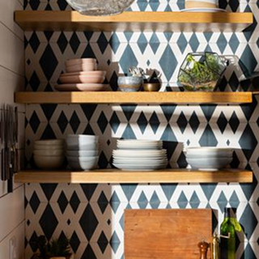
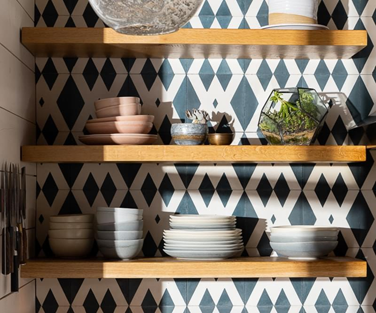
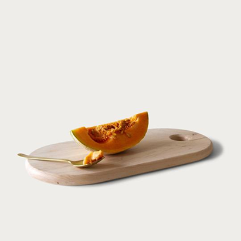
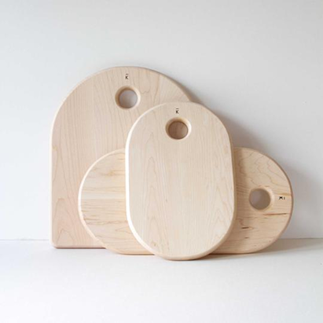

Solid maple boards made to last a lifetime in your kitchen
Serving boards designed for sharing good food and good company
Everything you need for everyday cooking, beautifully made
Click the icons to explore our workshop sounds and scenes




Every board tells a story of careful hands and quality wood